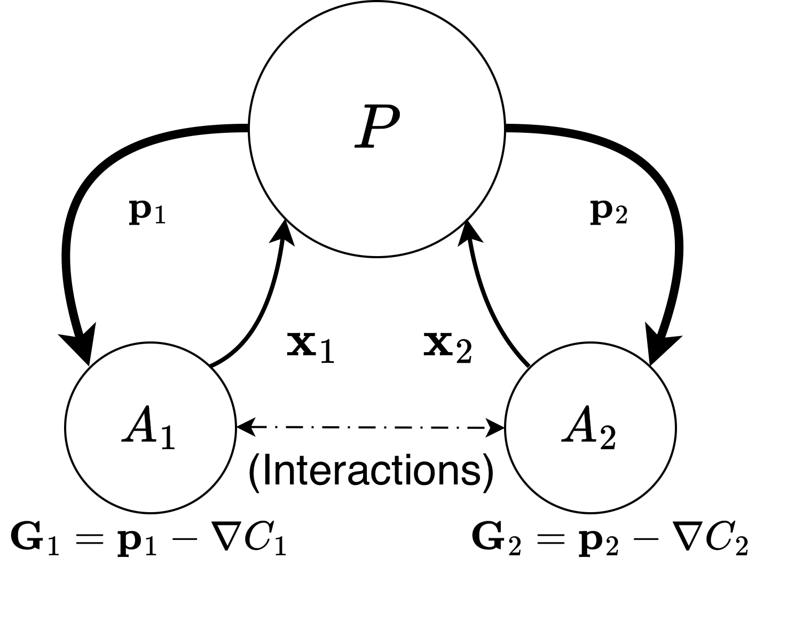

Theorems 1–4 on incentive compatibility, potential-game equilibrium, and gradient convergence are machine-checked in Lean 4 with Mathlib; source files are released.
Abstract
Autonomous multi-agent systems struggle with the Hayekian Information problem (using dispersed private knowledge) and the Hurwiczian Incentive problem (aligning local actions with global objectives). I introduce Mechanism-Based Intelligence (MBI), an architecture that treats intelligence as emergent from the coordination of specialized modules rather than a single monolithic model. At its core, the Differentiable Price Mechanism computes the exact gradient of the system loss as a price; subtracting its own marginal cost, each agent obtains the incentive signal $$\mathbf{G}_i = - \frac{\partial \mathcal{L}_{\mathrm{global}}}{\partial \mathbf{x}_i},$$ and the transfers take the Groves form. Each agent's best response minimizes the global loss given the actions of others, so the negative global loss is an exact potential for the resulting game, with a unique equilibrium at the global optimum. Gradient-based play converges to it under a step-size condition when effort is costless, and stops near it otherwise: a satisficing rule halts each agent's search when its marginal gain no longer exceeds its marginal computational cost. The equilibrium requires no knowledge of agents' private costs, so asymmetric information causes no welfare loss; simultaneous gradient dynamics require only a public bound on cost curvature. Each iteration scales linearly ($\mathcal{O}(N)$) with the number of agents, though for losses summed over agents the iteration count also grows with $N$. For known, differentiable losses, MBI avoids the combinatorial search of Decentralized Partially Observable Markov Decision Processes. Under convexity and smoothness conditions, MBI aligns agent self-interest with the Planner's objective, offering an auditable approach to multi-agent coordination.
Problem
Multi-agent AI systems face two problems: using knowledge that is dispersed and private to individual agents (Hayekian), and aligning each agent's local actions with a global objective (Hurwiczian). Centralized cognitive architectures and unstructured LLM dialogue give no formal guarantee of alignment or optimality.
Approach
Mechanism-Based Intelligence (MBI) arranges agents in a differentiable DAG. A Differentiable Price Mechanism sends each agent the gradient of the system loss as a price, and transfers take the Groves form. Each agent's incentive signal is then the negative gradient of the global loss, which makes the negative global loss an exact potential for the game. A satisficing rule stops an agent's search once its marginal gain no longer exceeds its marginal computational cost. The core theorems were checked in Lean 4 with Mathlib, taking standard convexity and descent lemmas as hypotheses.

Figure 1 : Atomic MBI Architecture and DPM. This diagram illustrates the minimal, closed-loop interaction between the Planner ( P ) and two Agents ( A_{1},A_{2} ). In the Forward Pass (thin arrows), the agents’ actions \mathbf{x}_{1} and \mathbf{x}_{2} reach the Planner. The dotted two-way arrow marks the strategic interaction between the agents: through the system loss, each agent’s incentive dep
Results
Under convexity and smoothness, the unique equilibrium is the global optimum. It requires no knowledge of agents' private costs, so asymmetric information causes no welfare loss, and gradient play converges under a step-size condition. Each iteration costs O(N) in the number of agents, and numerical experiments confirm convergence and robustness to persistent action noise.